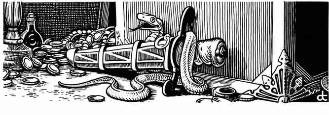

收藏品 · Collections（d12）
| 骰值 | 收藏品 |
|---|---|
| 1 | 小刀与匕首 Knives & Daggers |
| 2 | 剑 Swords |
| 3 | 武器 Weapons |
| 4 | 盾牌与武器 Shields & Weapons |
| 5 | 护甲 Armor |
| 6 | 书籍与卷轴 Books & Scrolls |
| 7 | 矿物与宝石 Minerals & Gems |
| 8 | 饰物与珠宝 Ornaments & Jewelry |
| 9 | 钱币与代币 Coins & Tokens |
| 10 | 战利品与兽皮 Trophies & Skins |
| 11 | 瓷器、陶器与水晶 Porcelain, China & Crystal |
| 12 | 艺术品 Artwork* |
艺术品包括挂毯、绘画、雕像、雕刻品等。
